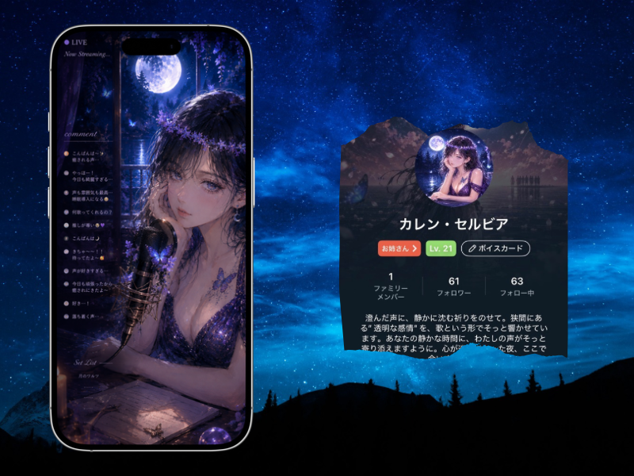
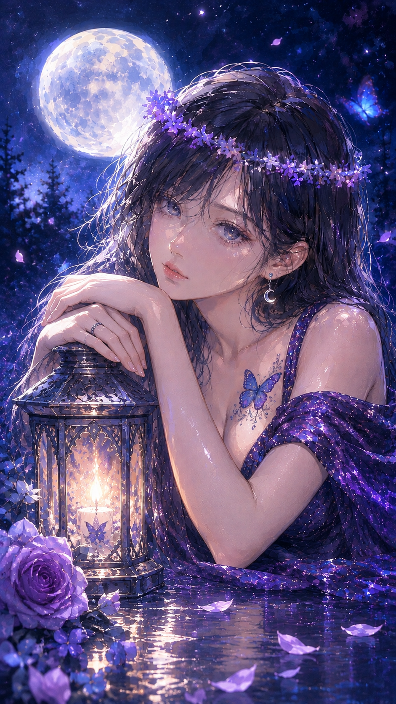
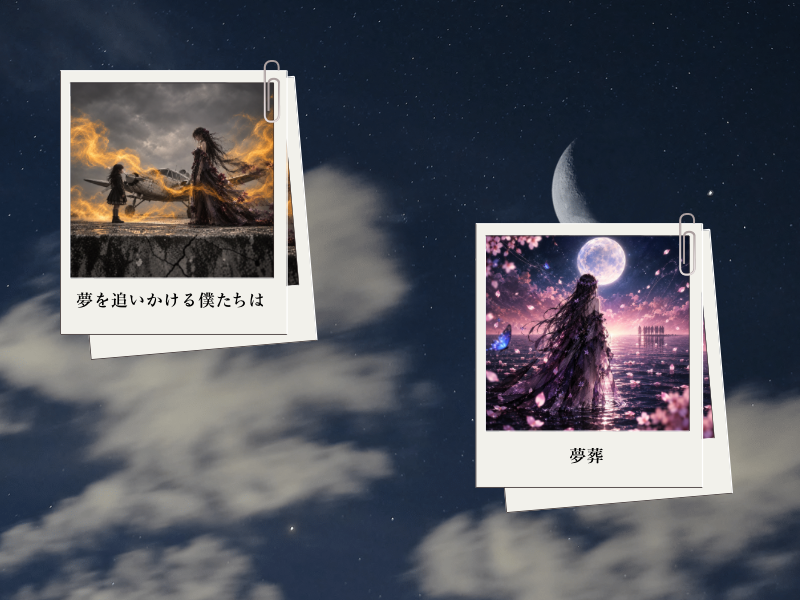
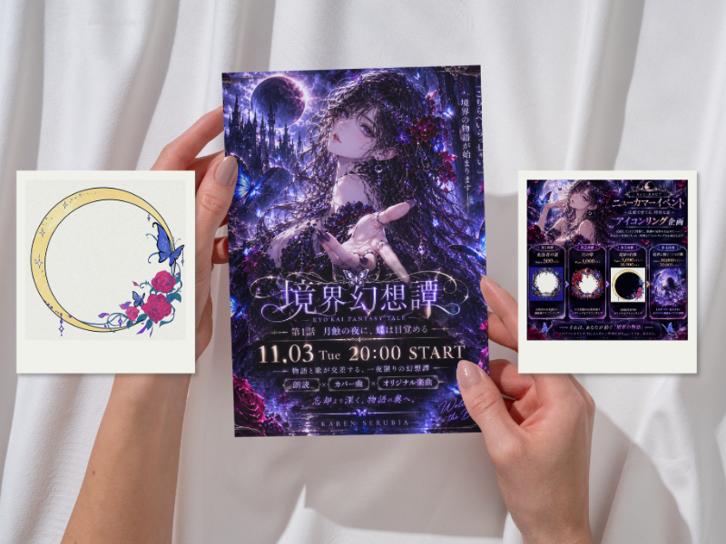
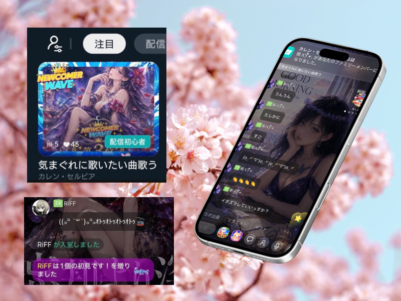

MY VOICE, YOUR NIGHT
Streaming
声を通して出逢い、言葉を交わし、同じ時間を楽しむ。
WAVEで紡ぐ大切なひととき。
ABOUT / KAREN SERUBIA
言葉と音楽に想いをのせて、
夜を照らす小さな光でありたい。
SCROLL TO DISCOVER

Karen SerubiaPROFILE
BRAND STORY
カレン•セルビアの世界は、 静かな月夜の庭から始まります。
嬉しい夜も、少し心細い夜も。 ここへ来れば、温かな声と優しい音楽が待っている。
配信や音楽、創作を通して出逢った１つひとつの縁を、 かけがえのない物語として育てていきたい。
誰かの心に、小さな灯りをともせるように。 そんな願いを、この月夜に込めています。
May your night be filled with gentle light.
WHAT I DO
声と音楽、そして創作を通して。

MY VOICE, YOUR NIGHT
声を通して出逢い、言葉を交わし、同じ時間を楽しむ。
WAVEで紡ぐ大切なひととき。

MELODIES OF THE MOON
歌声や旋律に想いをのせて。
心に残る音楽を、自分らしい表現で届けていきます。

A WORLD OF IMAGINATION
アイデアを形にし、まだ見ぬ世界を描く。
デザインや企画を通して表現を広げています。

MEMORIES WE SHARE
出逢ってくれたみんなと過ごす時間。
何気ない会話も、かけがえのない思い出です。
A LITTLE MESSAGE FOR YOU
今夜、ここへ訪れてくれたあなたへ。
何気ない一日だったとしても、
少し疲れてしまった夜だったとしても。
この場所で過ごすひとときが、
あなたの心を少し軽くする時間になりますように。
出逢ってくれて、ありがとう。
Karen Serubia